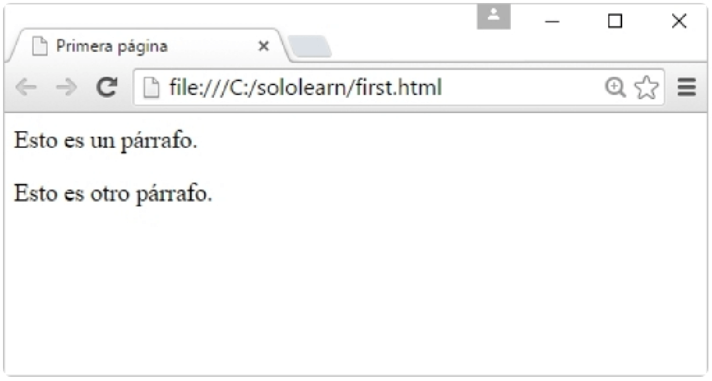
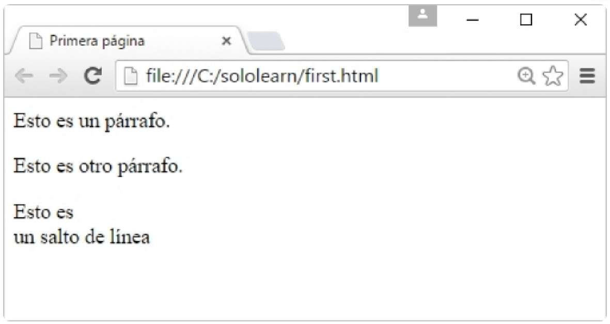

HTML está en el centro de cada página web. Detrás de cada página web que has visitado hay código HTML que tu
navegador web puede ejecutar para mostrar elementos como texto, imágenes y tablas.
En este curso, trabajarás con código HTML para controlar la estructura y los elementos de una página web.
HTML es el lenguaje estándar para los documentos diseñados para ser mostrados en un navegador web.
Del código HTML a las páginas web
Los navegadores web leen documentos HTML (que contiene instrucciones o código HTML) para mostrar la página web
resultante.
Un documento HTML puede incluir diferentes elementos como títulos de texto, párrafos, imágenes o tablas. Estos
elementos se definen utilizando diferentes etiquetas.
Párrafos de texto
HTML se basa en etiquetas. Puedes indicar al navegador web que deseas incluir un párrafo de texto en tu página web
encerrando el texto en etiquetas de párrafo <p>.
<p>I'm a text paragraph</p>
Etiquetas de apertura y cierre
El elemento párrafo requiere etiquetas de apertura y cierre.
<p> es la etiqueta de apertura del párrafo. Define el inicio del elemento.
</p> es la etiqueta de cierre, que se utiliza para definir el final del elemento con la barra diagonal.
<p>I'm a text paragraph</p>
Muchos elementos HTML requieren etiquetas de apertura y cierre, también llamadas etiquetas contenedoras.
Elementos HTML
HTML usa etiquetas para definir elementos. Seguirás aprendiendo sobre elementos HTML en las siguientes lecciones.
El código HTML de ejemplo a continuación crea una página web básica con 3 diferentes elementos HTML:
Un elemento de encabezado, definido mediante la etiqueta <h>
Un párrafo, definido con la etiqueta <p>
Una imagen, definida con la etiqueta <img>
<h1>My First Heading</h1>
<p>My first paragraph.</p>
<img src="image_url">
La imagen siguiente muestra lo que mostrará el navegador web:
Lecciones aprendidas
Enhorabuena por haber completado tu primera lección. Vamos a resumir lo que has aprendido:
El código HTML se utiliza para estructurar el contenido de una página web.
Los navegadores web leen documentos HTML para mostrar la página web resultante.
HTML se basa en etiquetas y diferentes elementos HTML necesitan diferentes etiquetas.
<p> es la etiqueta para los párrafos de texto.
En la siguiente lección, aprenderás sobre otros elementos HTML que puedes añadir a tus páginas web y empezarás a
escribir, ejecutar y probar código real.
Elementos HTML
Escribiendo código HTML
¿Listo para escribir, ejecutar y probar código real? Eso es exactamente lo que harás en esta lección. El Code
Playground te permite hacer todo eso.
El código HTML siguiente añade 2 párrafos a una página web. Pulsa el bloque de código para abrir el Code Playground
y presiona "run" para ver lo que muestra un navegador web.
<p>I'm paragraph number 1.</p>
<p>I'm paragraph number 2.</p>
¿Puedes cambiar el código para mostrar un texto diferente?
La página web Code Playground tiene secciones para las 3 tecnologías web principales.
CSS controla la presentación y el estilo de una página web.
JavaScript controla el comportamiento y hace que las páginas web sean interactivas.
En este curso sólo utilizarás la sección HTML.
Más elementos HTML
Vamos a añadir otros elementos HTML a la página. El código de ejemplo siguiente crea la estructura de una página
web básica con 3 elementos HTML:
Un elemento de encabezado de nivel 1, definido mediante la etiqueta <h1>
Un párrafo, definido con la etiqueta <p>
Una imagen, definida con la etiqueta <img>
<h1>My First Heading</h1>
<p>My first paragraph ,</p>
<img src="http://www.sololearn.com/images/tree.jpg">
</html>
Abre el Code Playground y presiona run para ver lo que mostrará el navegador web.
Encabezados de texto
Se pueden utilizar hasta 6 niveles de encabezados en HTML, y las etiquetas para estos elementos de encabezado son
<h1>, <h2>, <h3>, <h4>, <h5> y <h6>.
A continuación puedes encontrar un ejemplo de código con algunos títulos y la página web que mostrará el navegador:
Abre el Code Playground y presiona run para ver lo que mostrará el navegador web.
Los diferentes niveles de encabezado ayudan a comunicar la organización y jerarquía del contenido de una página.
Etiquetas contenedoras
Muchos elementos HTML requieren etiquetas de apertura y cierre, también llamadas etiquetas contenedoras. Los
títulos son ejemplos de etiquetas contenedoras.
Las etiquetas contenedoras siempre vienen con contenido. El contenido es lo que queremos que muestre el navegador.
Las etiquetas contenedoras vienen en parejas y siguen esta estructura:
etiqueta de apertura + contenido + etiqueta de cierre
Etiqueta de imagen
Puedes añadir imágenes a tu página web utilizando la etiqueta <img>. Técnicamente, las imágenes no se
insertan en una página web, sino que se enlazan.
<img src="image_url">
Es necesario indicar al navegador la ruta o ubicación del archivo de imagen para que pueda encontrarlo y mostrarlo.
Esta ruta o ubicación se denomina source (src) de la imagen y debe incluirse en la etiqueta de la imagen.
La etiqueta de imagen no requiere una etiqueta de cierre. Las etiquetas que no contienen etiquetas de cierre se
denominan etiquetas vacías.
Lecciones aprendidas
¡Bien hecho! En esta lección, has aprendido que:
Puedes utilizar el Code Playground para escribir, ejecutar y testear tu código.
Puedes incluir encabezados de 6 niveles diferentes en tus páginas web utilizando las etiquetas <h>
Puedes añadir imágenes a tus páginas web con la etiqueta <img>.
En la próxima aprenderás a añadir más elementos HTML para crear páginas web más complejas e interesantes.
Creando tu primera página con HTML
El archivo HTML
Los archivos HTML son archivos de texto, por lo que puedes usar cualquier editor de texto para crear tu primera
página web.
Existen algunos editores de HTML muy buenos; puedes escoger el que creas conveniente. Por ahora, vamos a escribir
nuestros ejemplos en el Bloc de Notas:
Puedes ejecutar, guardar y compartir tus códigos de HTML en nuestro «Code Playground» sin tener que instalar un
software adicional.
El archivo HTML
Añade la estructura básica HTML en el editor de texto con la frase "Esto es una línea de texto" en la sección body.
<html>
<head>
</head>
<body>
Esto es una línea de texto.
</body>
</html>
En nuestro ejemplo, hemos guardado el archivo como first.html
Al abrir el archivo, se mostrará el siguiente resultado en el navegador:
No olvides guardar el archivo. Los nombres de archivos HTML deberían terminar en .html o .htm
La etiqueta <head>
Justo después de la etiqueta HTML de apertura encontrarás la cabecera del documento, la cual se identifica con las
etiquetas head de apertura y cierre.
La cabecera (o head) de un archivo HTML Contiene todos los elementos no visuales que ayudan a que la página
funcione correctamente.
<html>
<head>...</head>
</html>
Veremos los elementos de la sección head más adelante.
La etiqueta <title>
Para colocar en la pestaña un título que describa la página web, añade un elemento <title> en tu sección
head:
El título es importante porque describe a la página y es usado por los motores de búsqueda.
Creando un Blog
Creando un Blog
A lo largo de este curso, te ayudaremos a practicar y crear tu propio y único blog, para que retengas lo que has
aprendido y seas capaz de ponerlo en práctica. Sólo avanza y sigue las instrucciones en la sección TAREA. Así es
como se verá tu página de blog finalizada.
TAREA: Pulsa Ejecutar este código para ver el código y su salida.
<html>
<head>
<title>My Blog</title>
</head>
<body>
No temas por largos códigos. Para el momento en que termines el curso, todo tendrá sentido y se verá fácilmente realizable. ¡Te lo garantizamos!
</body>
</html>
TAREA:
Abre el código.
En el encabezado, cambia el nombre por tu propio nombre.
Cambia el título de la página. Recuerda, el título de la página está localizado dentro de la etiqueta
<title> en la sección <head> de la página.
Examen módulo 1
¡Próximamente!
Conceptos básicos de HTML
Encabezados, líneas, comentarios
Encabezados HTML
HTML incluye seis niveles de encabezados, los cuales están clasificados de acuerdo a su importancia.
Estos son <h1>, <h2>, <h3>, <h4>, <h5>, y <h6>.
El siguiente código define todos los encabezados:
<html>
<head>
<title>Primera página</title>
</head>
<body>
<h1>Este es el encabezado 1</h1>
<h2>Este es el encabezado 2</h2>
<h3>Este es el encabezado 3</h3>
<h4>Este es el encabezado 4</h4>
<h5>Este es el encabezado 5</h5>
<h6>Este es el encabezado 6</h6>
</body>
</html>
Resultado:
No es recomendable que uses encabezados sólo para convertir el texto en negrita o cursiva, ya que los motores de
búsqueda usan los encabezados para indexar la estructura de la página web y el contenido.
Líneas horizontales
Para crear una línea horizontal, usa la etiqueta <hr>
<html>
<head>
<title>Primera página</title>
</head>
<body>
<h1>Este es el encabezado 1</h1>
<h2>Este es el encabezado 2</h2>
<h3>Este es el encabezado 3</h3>
<h4>Este es el encabezado 4</h4>
<h5>Este es el encabezado 5</h5>
<h6>Este es el encabezado 6</h6>
<p>Esto es un párrafo </p>
<hr>
<p>Esto es un párrafo </p>
</body>
</html>
Resultado:
En HTML5, la etiqueta <hr> define un cambio de tema.
Comentarios
El explorador no despliega comentarios, pero estos ayudan a documentar el código HTML para agregar descripciones,
recordatorios y otras notas.
<!--Aquí va tu comentario-->
Ejemplo:
<html>
<head>
<title>Primera página</title>
</head>
<body>
<p>Esto es un párrafo</p>
<hr />
<p>Esto es un párrafo</p>
<!-- Esto es un comentario -->
</body>
</html>
Resultado:
Como puedes ver, el comentario no es desplegado en el explorador web.
Hay un signo de exclamación (!) en la etiqueta de apertura, pero no en la etiqueta de cierre.
Párrafos
El elemento <p>
Para crear un párrafo, simplemente escribe dentro del elemento <p>, entre las etiquetas de apertura y cierre:
<html>
<head>
<title>Primera página</title>
</head>
<body>
<p>Esto es un párrafo.</p>
<p>Esto es otro párrafo.</p>
</body>
</html>
El resultado:

Los exploradores web automáticamente agregan una línea antes y después del párrafo.
Salto de línea sencillo
Use la etiqueta <br /> para agregar un salto de línea sin empezar un nuevo párrafo:
<html>
<head>
<title>Primera Página</title>
</head>
<body>
<p>Esto es un párrafo.</p>
<p>Esto es otro párrafo.</p>
<p>Esto es <br /> un salto de línea</p>
</body>
</html>
El elemento <br /> es un elemento HTML vacío. No tiene etiqueta de cierre.
Salto de línea sencillo
Al abrir el archivo HTML en el explorador web muestra que un salto de línea simple ha sido agregado al párrafo:

El elemento <br /> es un elemento HTML vacío. No tiene etiqueta de cierre.
Formato de texto
Elementos de Formato
En HTML, hay una lista de elementos que especifican el estilo de texto.
Los elementos de formato fueron diseñados para mostrar tipos especiales de texto:
La etiqueta <strong> es una etiqueta de frase. Define texto importante.
Elementos de formato
Cada párrafo en el ejemplo es formateado de manera diferente para demostrar lo que hace cada etiqueta:
Los exploradores muestran <strong> como <b>, y <em> como <i>. Sin embargo, los significados
de estas etiquetas difieren: <b> e <i> definen texto en negrita y cursiva respectivamente, mientras que
<strong> y <em> indican que el texto es "importante".
Proyecto blog, acerca de mí
Formateando Texto
Volvamos a nuestro proyecto de blog.
La sección About Me (Acerca de Mí) tendrá un encabezado que estará envuelto en una etiqueta <h1>, junto con
dos párrafos que formatean el texto utilizando las etiquetas que acabas de aprender.
Vamos a echarle un vistazo al código:
<h1><span>About Me</span></h1>
<p>Hey! I'm <strong>Alex</strong>. Coding has changed my world</p>
<p class="quote"> "Declare variables, not war"</p>
Te puedes haber dado cuenta que también hemos utilizado algo de CSS para añadir colores y estilos a la página.
Cuando completes el tutorial de HTML, ¡te recomendamos nuestro tutorial gratuito de CSS!
TAREA:
Crea tu propia sección "About Me" modificando el texto.
Juega con el código; experimenta formateando el texto.
Elementos
Elementos HTML
Los documentos HTML están hechos de elementos HTML.
Un elemento HTML se escribe usando una etiqueta de inicio, una etiqueta de cierre, y con el contenido en medio de
ambas etiquetas
Los documentos HTML consisten en elementos HTML anidados. En el ejemplo siguiente, el elemento body incluye las
etiquetas <p>, <br /> y el contenido, "Esto es un párrafo".
<html>
<head>
<title>Primera página</title>
</head>
<body>
<p>Esto es un párrafo<br /></p>
</body>
</html>
Algunos elementos HMTL (Como la etiqueta <br />) no tienen etiquetas de cierre.
Elementos HTML
Algunos elementos son bastante pequeños. Como no podemos agregar contenido dentro de una etiqueta de salto de
línea, y no tiene una etiqueta de apertura ni tampoco de cierre, este es un elemento separado y sencillo.
Por lo tanto, HTML es en realidad múltiples secuencias de comandos utilizando elementos dentro de elementos.
<html>
<head>
<title>Primera página</title>
</head>
<body>
<p>Esto es un párrafo</p>
<p>Esto es un <br /> salto de linea</p>
</body>
</html>
Algunos elementos HMTL (Como la etiqueta <br />) no tienen etiquetas de cierre.
Atributos
Atributos HTML
Los atributos proveen información adicional sobre un elemento o etiqueta, a la vez que lo modifican. La mayoría de
atributos tienen un valor; el valor modifica el atributo.
<p align="center">
Este texto está alineado hacia el centro
</p>
En este ejemplo, el valor de "center" indica que el contenido dentro del elemento p debería estar alineado hacia el
centro.
Los atributos siempre están especificados en la etiqueta de apertura, y aparecen en parejas de nombre="valor".
Atributos de dimensión
Como un ejemplo, podemos modificar la línea horizontal para que tenga un ancho de 50 pixeles.
Esto se puede hacer usando el atributo width:
<hr width="50px" />
El ancho de un elemento también puede ser modificado usando porcentajes:
<hr width="50%" />
La anchura de un elemento se puede definir mediante píxeles o porcentajes.
El atributo align
El atributo align es usado para especificar cómo alinear el texto.
En el siguiente ejemplo, tenemos un párrafo que está alineado hacia el centro, y una línea que está alineada hacia
la derecha.
<html>
<head>
<title>Atributos</title>
</head>
<body>
<p align="center">Esto es un texto <br />
<hr width="10%" align="right" /> Esto también es un texto.
</p>
</body>
</html>
El atributo de alineación <p> no está soportado en HTML5.
El atributo align
Puedes estar preguntando qué pasa si intentamos aplicar atributos contradictorios dentro del mismo elemento.
<p align="center">
Esto es un texto.
<hr width="50%" align="left" />
</p>
El atributo de alineación <p> no está soportado en HTML5.
Imágenes
La etiqueta <img>
La etiqueta <img> es usada para insertar una imagen. Contiene sólo atributos, y no tiene una etiqueta de
cierre.
La URL de la imagen (dirección) puede ser definida usando el atributo src.
La sintaxis HTML de una imagen se ve así:
<img src="image.jpg" />
El atributo alt especifica un texto alternativo para una imagen.
Ubicación de la imagen
Para que el explorador web pueda desplegar una imagen, necesitamos colocar dentro de comillas la ubicación de la
imagen como valor del atributo src.
Por ejemplo, tenemos una foto llamada "tree.jpg" en la misma carpeta que el archivo HTML, su código debería verse
así:
<img src="tree.jpg" alt="" />
En caso de que la imagen no pueda ser mostrada, el atributo alt especifica un texto alternativo que describe la
imagen en palabras. El atributo alt es requerido.
Cambiar el tamaño de una imagen
Para definir el tamaño de una imagen, usa los atributos width y height (ancho y alto).
El valor puede ser especificado en pixeles o como un porcentaje:
Aprenderemos cómo añadir barras de progreso a cada una de las habilidades en nuestro módulo siguiente.
TAREA:
Crea tu propia sección My Skills (Mis Habilidades).
Utiliza la etiqueta <a> para hacer de cada elemento de la lista un enlace.
Tablas
Creando una tabla
Las tablas son definidas usando la etiqueta <table>,
Las tablas son divididas en filas con la etiqueta <tr>.
Las filas de la tabla son divididas en columnas (datos de la tabla) con la etiqueta <td>.Aquí hay un ejemplo
de una tabla con una fila y tres columnas:
En el caso de dar estilo a los elementos, CSS es más efectivo que HTML. Prueba nuestro curso "Aprende CSS" para
aprender más sobre CSS y estilos.
Hipervínculos
La etiqueta <a>
Los hipervínculos también son una parte fundamental de cualquier página web. Puede agregar hipervínculos a textos o
imágenes que le permitirán al usuario hacer click en ellos para luego ser redirigidos a otro archivo o página web.
En HTML, los hipervínculos son definidos usando la etiqueta <a>.
Use el atributo href para definir la dirección de destino del hipervínculo:
<a href=""></a>
Para vincular una imagen a otro documento, simplemente introduce la etiqueta <img> entre etiquetas <a>.
Creando su primer hipervínculo
En el siguiente ejemplo, se define un hipervínculo al sitio web de SoloLearn es definido:
Las etiquetas <td> vacías representan celdas de tabla vacías. Son necesarias porque mantienen la estructura
de la tabla.
TAREA: Personaliza la tabla para crear tu horario particular!
Elementos inline y block
Tipos de Elementos
En HTML, la mayoría de elementos son definidos como elementos a nivel de bloque (block) o en línea (inline).
Los elementos a nivel de bloque empiezan desde una nueva línea.
Por Ejemplo: <h1>, <form>, <li>, <ol>, <ul>, <p>, <pre>, <table>,
<div>, etc.
Los elementos en línea son normalmente desplegados sin los saltos de línea.
Por Ejemplo: <b>, <a>, <strong>, <img>, <input>, <em>, <span>, etc.
El elemento <div> es un elemento a nivel de bloque que es a menudo utilizado como contenedor para otros
elementos HTML.
Cuando se utiliza en conjunto con CSS, el elemento <div> puede ser utilizado para darle estilo a bloques de
contenido:
<html>
<body>
<h1>Encabezado</h1>
<div style="background-color: green; color: white; padding:20px;">
<p>Esto sería el párrafo de contenido.</p>
<p>Justo aquí tienes otro artículo de contenido.</p>
</div>
</body>
</html>
El elemento <span> es un elemento de línea que es a menudo utilizado como contenedor para algún texto.
Cuando se utiliza en conjunto con CSS, el elemento <span> puede ser utilizado para darle estilo a partes del
texto:
El tipo submit envía un formulario a la dirección especificada en su atributo action:
<input type="submit" value="Enviar" />
Resultado:
Luego de que el formulario es enviado, los datos deberían ser procesados en el servidor usando un lenguaje de
programación, como PHP.
Proyecto Blog: Formulario de Contacto
Formulario de contacto
A continuación, vamos a crear un Formulario de Contacto (Contact Form) para tu blog. El formulario incluirá campos
de Nombre, correo electrónico y mensaje. También añadiremos un botón para Enviar.
Esto es sólo una página HTML estática, por lo que no podrá enviar realmente el formulario.
Necesitas crear el código del lado del servidor para poder enviar un formulario real y procesar la información.
Para aprender cómo, completa el curso PHP de SoloLearn una vez que hayas completado los cursos de HTML y CSS.
TAREA: ¡Revisa el código y personaliza el formulario para adaptarlo a tus necesidades!
Colores HTML
Colores HTML
Los colores en HTML son expresados como valores hexadecimales.
0, 1, 2, 3, 4, 5, 6, 7, 8, 9, A, B, C, D, E, F
Como puede ver, hay 16 valores, desde 0 hasta F. El cero representa el nivel más bajo, y F representa el más alto.
Modelo de Color HTML
Los colores son especificados en combinaciones de rojo, verde y azul claro (RGB por sus siglas en inglés).
Los valores hexadecimales son escritos usando el símbolo numeral (#), seguido por tres o seis caracteres
hexadecimales.
Como se muestra en la imagen siguiente, los círculos se sobreponen, formando nuevos colores:
Los valores de color RBG están soportados en todos los navegadores.
Valores de Colores
Todas las combinaciones posibles de rojo, verde y azul suman más de 16 millones.
Acá hay tan solo de ellos:
Podemos mezclar los colores para formar colores adicionales.
Mezcla de naranja y rojo:
Los valores de color hexadecimales están soportados en todos los navegadores.
Colores de fondo y de fuente
El atributo bgcolor puede ser usado para cambiar el color de fondo de la página web.
Este ejemplo producirá un fondo azul oscuro con un encabezado blanco.
El atributo color especifica el color del texto dentro de un elemento <font>.
Marcos
La etiqueta <frame>
Una página puede dividirse en marcos usando un documento especial de marco.
La etiqueta <frame> define una ventana específica (marco) dentro de un <frameset>.
Cada <frame> en un <frameset> puede tener diferentes atributos, como borde, desplazamiento, la
habilidad de redimensionar, etc.
El elemento <frameset> especifica el número de columnas o filas en el conjunto de marcos o frameset, y
también el porcentaje o número de píxeles de espacio que cada uno ocupa.
La codificación de caracteres por defecto en HTML5 es UTF-8.
Novedades en HTML5
Formularios
La especificación de Formularios Web 2.0 permite la creación de formularios más potentes y con experiencias de
usuario más enriquecidas.
Selectores de fecha, selectores de color y controles de paso numéricos han sido agregados.
Los tipos de campo de entrada ahora incluyen email, búsqueda y URL.
Los métodos de formulario PUT y DELETE son ahora soportados.
API Integrada (Interfaces de Programación de Aplicaciones)
Arrastrar y soltar
Audio y Video
Aplicaciones web sin conexión
Historial
Almacenamiento Local
Geolocalización
Mensajería web
Aprenderemos más sobre estas nuevas funciones en las próximas lecciones.
Modelos de contenido
La Lista de Modelos de Contenido
En HTML, los elementos pertenecían típicamente al modelo de contenido de bloque o contenido en línea. HTML5
introduce siete modelos de contenido principales.
Metadata
Embedded (Incrustado)
Interactive (Interactivo)
Heading (Encabezado)
Phrasing (Expresión)
Flow (Flujo)
Sectioning (Seccionamiento)
Los modelos de contenido HTML5 son diseñados para hacer la estructura de marcado más útil para el explorador y el
diseñador web.
Modelos de Contenido
Metadata: Contenido que define la presentación o comportamiento del resto del contenido. Estos elementos son encontrados en el head (la cabecera) del documento. Elementos: <base>, <link>, <meta>, <noscript>, <script>, <style>, <title>
Incrustado: Contenido que importa otros recursos al documento. Elementos: <audio>, <video>, <canvas>, <iframe>, <img>, <math>, <object>,
<svg>
Encabezado: Define un encabezado de sección. Elementos: <h1>, <h2>, <h3>, <h4>, <h5>, <h6>, <hgroup>
Expresión: Este modelo tiene un número de elementos en línea en común con HTML4. Elementos: <img>, <span>, <strong>, <label>, <br />, <small>, <sub>, y
más.
El mismo elemento puede pertenecer a más de un modelo de contenido.
Modelos de Contenido
Flujo de contenido: Contiene la mayoría de los elementos HTML5 que serían incluidos en el flujo normal del documento.
Seccionamiento de contenido: Define el alcance de encabezados, contenido, navegación y pies de página. Elementos: <article>, <aside>, <nav>, <section>
Estructura de página HTML5
Estructura de página en HTML5
Una estructura de página genérica HTML5 se ve así:
Puede ser que no necesites algunos de estos elementos, dependiendo de la estructura de tu página.
header, nav & footer
El elemento <header>
En HTML4, definiríamos un encabezado así:
<div id="header">
En HTML5, una simple etiqueta <header> es usada.
El elemento <header> es apropiado para ser usado dentro de la etiqueta body.
<!DOCTYPE html>
<html>
<head></head>
<body>
<header>
<h1>Encabezado más importante</h1>
<h3>Encabezado menos importante</h3>
</header>
</body>
</html>
Note que la etiqueta <header> es completamente diferente de la etiqueta <head>.
El elemento <footer>
El elemento footer también es utilizado ampliamente. Generalmente, al hablar del footer nos referimos a una sección
localizada en la parte inferior de la página web.
<footer>...</footer>
La siguiente información se provee usualmente dentro de estas etiquetas:
Información de Contacto
Política de Privacidad
Íconos de redes sociales
Términos de Servicio
Información de Derechos de autor
Mapa del sitio y documentos relacionados
El elemento <nav>
Esta etiqueta representa una sección de la página, que conecta a otras páginas o ciertas secciones dentro de la misma página. Esto sería una sección con hipervínculos de navegación.
Acá hay un ejemplo de un bloque grande de hipervínculos de navegación:
No todos los hipervínculos en un documento deberían estar dentro de un elemento <nav>. El elemento <nav> está hecho sólo para bloques grandes de hipervínculos de navegación. Típicamente, el elemento <footer> tiene una lista de hipervínculos que no necesitan estar en un elemento <nav>.
article, section y aside
El elemento <article>
El elemento article es una pieza autónoma, de contenido independiente que puede ser usada y distribuida
separadamente del resto de la página o sitio. Esto podría ser un post de un foro, una revista o un artículo de
revista, una entrada de blog, un comentario, un widget interactivo o gadget, o cualquier otra pieza de contenido
independiente.
El elemento <article> remplaza al elemento <div> que fue ampliamente usado en HTML4, junto con un id o
una clase.
<article>
<h1>El título del Artículo</h1>
<p>Contenidos del elemento artículo</p>
</article>
Cuando un elemento <article> es anidado, el elemento interior representa un artículo relacionado al elemento
exterior. Por ejemplo, comentarios de un post en un blog pueden ser elementos <article> anidados en el
<article> representando el post del blog.
El elemento <section>
<section> es un contenedor lógico de la página web o artículo. Las secciones pueden ser usadas para dividir
contenido dentro de un artículo. Por ejemplo, una página principal podría tener una sección para introducir a la
compañía, otra para ítems de noticias, y también otra para la información de contacto.
Cada <section> debería ser identificada, típicamente incluyendo un encabezado (elemento h1-h6) como un hijo
del elemento <section>.
<article>
<h1>Bienvenido</h1>
<section>
<h1>Encabezado</h1>
<p>contenido o imagen</p>
</section>
</article>
Si tiene sentido ubicar separadamente el contenido de un elemento <section>, use mejor un elemento
<article>.
El elemento <aside>
El elemento <aside> es contenido secundario o tangencial que podría ser considerado separado pero
indirectamente relacionado al contenido principal.
Este tipo de contenido es a veces representado en barras laterales. Cuando una etiqueta <aside> es usada
dentro de una etiqueta <article>, el contenido de <aside> debería estar específicamente relacionado a
ese artículo.
<article>
<h1>Regalos para todos</h1>
<p>Este sitio web será el mejor lugar para escoger regalos</p>
<aside>
<p>Los regalos serán entregados a usted dentro de las siguientes 24 horas</p>
</aside>
</article>
Cuando una etiqueta <aside> es usada fuera de una etiqueta <article>, su contenido debería estar
relacionado al contenido que está a su alrededor.
El elemento audio
Audio en la web
Antes de HTML5, no había un estándar para reproducir archivos de audio en una página web. El elemento HTML5
<audio> especifica un estándar para instructar audio en una página web.
Hay dos maneras diferentes de especificar la URL de origen del audio. El primero usa el atributo source:
<audio src="audio.mp3" controls>Elemento de audio no soportado por su explorador</audio>
La segunda forma usa el elemento <source> dentro del elemento <audio>:
Múltiples elementos <source> pueden ser enlazados a diferentes archivos de audio. El explorador usará el
primer formato reconocido.
Audio en la Web
El elemento <audio> crea un reproductor de audio dentro del explorador.
<audio controls>
<source src="audio.mp3" type="audio/mpeg">
<source src="audio.ogg" type="audio/ogg">
Elemento de Audio no soportado por su explorador.
</audio>
Resultado:
El texto en medio de las etiquetas <audio> y </audio> se mostrará en los exploradores que no soporten
el elemento <audio>.
Atributos de <audio>
Controls: Especifica qué controles de audio deberían ser desplegados (como el botón de play/pause etc.)
<audio controls>
Autoplay: Cuando este atributo es definido, el audio empieza a reproducirse tan pronto está listo, sin preguntar por el
permiso del visitante.
<audio controls autoplay>
Loop: Este atributo es usado para que el audio se vuelva a reproducir cada vez que finaliza.
<audio controls autoplay loop>
Actualmente, hay tres formatos de archivo soportados para el elemento <audio>: MP3, WAV y OGG.
El elemento video
Videos en HTML
El elemento video es similar al elemento audio. Se puede especificar la URL de origen del video usando el atributo src en un elemento de video, o usando elementos source dentro del elemento video:
<video controls>
<source src="video.mp4" type="video/mp4">
<source src="video.ogg" type="video/ogg">
Elemento de video no es soportado en su explorador
</video>
Otro aspecto que los elementos de audio y video tienen en común es que los exploradores más importantes no soportan
los mismos tipos de archivo. Si el explorador no soporta el primer tipo de video, intentará el siguiente.
Atributos de <video>
Otro aspecto compartido por los elementos audio y video es que cada uno tiene atributos controls, autoplay y loop.
En este ejemplo, el video volverá a empezar después de que termine de reproducirse:
<video controls autoplay loop>
<source src="video.mp4" type="video/mp4">
<source src="video.ogg" type="video/ogg">
Elemento de Video no es soportado en su explorador
</video>
Actualmente, hay tres formatos de video soportados para el elemento <video>: MP4, WebM, y OGG
El elemento progress
Barra de progreso
El elemento <progress> (progreso) provee la habilidad de crear barras de progreso en la web. Este elemento
progreso puede ser usado con encabezados, párrafos, o en cualquier otra parte del body.
Atributos del elemento progress
Value: Especifica cuánto de la tarea ha sido completado.
Max: Especifica cuánto trabajo la tarea requiere en total.
Usa la etiqueta <progress> en
conjunto con JavaScript para mostrar
dinámicamente el progreso de una
tarea.
API de almacenamiento web
Almacenamiento web HTML5
Con almacenamiento web HTML5, los sitios web pueden guardar datos en el computador local de los usuarios. Antes de
HTML5, teníamos que usar Cookies de JavaScript para alcanzar esta funcionalidad.
Las ventajas del almacenamiento web
Más seguro
Más rápido
Guarda una cantidad más grande de datos.
Los datos guardados no son enviados con cada petición del servidor
El almacenamiento local es por dominio. Todas las páginas desde un dominio pueden guardar y acceder a los mismos
datos.
Tipos de objetos de almacenamiento web
Hay dos tipos de objetos de almacenamiento web:
sessionStorage()
localStorage()
Local vs. Session
El almacenamiento por sesión es destruido una vez el usuario cierra el explorador.
El almacenamiento local guarda datos sin fecha de expiración.
Necesita estar familiarizado con JavaScript básico para entender y usar la API.
Usando Valores
La sintaxis para el almacenamiento web en modo local y en modo sesión es muy sencilla y similar.
Los datos son guardados como parejas de clave/valor.
Guardando un valor
localStorage.setItem("clave1", "valor1");
Obteniendo un valor
//esto imprimirá el valor
alert(localStorage.getItem("clave1"));
Removiendo un valor
localStorage.removeItem("clave1");
Removiendo todos los valores
localStorage.clear();
La sintaxis del almacenamiento por sesión es casi igual, con una diferencia: En vez de localStorage se usa
sessionStorage.
API de geolocalización
¿Qué es la API de geolocalización?
En HTML5, la API de geolocalización es usada para obtener la localización geográfica del usuario.
Ya que esto puede comprometer la privacidad del usuario, la opción no está disponible a menos que el usuario la
apruebe.
La geolocalización es mucho más precisa para dispositivos con GPS, como teléfonos inteligentes y demás.
Usando geolocalización HTML
El método principal de la API de geolocalización es getCurrentPosition, que obtiene la localización geográfica
actual del dispositivo del usuario.
navigator.geolocation.getCurrentPosition();
Parámetros:
showLocation (obligatorio): Define el método callback que obtiene la información de localización.
ErrorHandler (opcional): Define el método callback que es invocado cuando un error ocurre procesando la llamada
asincrónica.
Options (opcional): Define un conjunto de opciones para obtener la información de localización.
Es necesario estar familiarizado con JavaScript básico para entender y usar la API.
Presentando los Datos
La localización del usuario puede ser presentada de dos formas: Geodetic y Civic.
La forma geodetic para describir posición se refiere directamente a latitud y longitud.
La representación civic de los datos de localización es presentada en un formato que es leído más fácilmente y
entendido por la persona promedio.
Cada parámetro tiene una representación tanto geodetic como civic.
El método getCurrentPosition() devuelve un objeto si su respuesta es exitosa. Las propiedades de latitud, longitud
y exactitud son siempre retornadas.
API de Drag & Drop
Haciendo los objetos arrastrables
La característica de arrastrar y soltar le permite "agarrar" un objeto y arrastrarlo a un lugar diferente.
Para hacer un elemento arrastrable, solo establece el atributo draggable a verdadero:
<img draggable="true" />
Cualquier elemento HTML puede ser arrastrable.
La API para arrastrar y soltar en HTML está basada en eventos.
Cuando el elemento es arrastrado, el atributo ondragstart llama a una función, drag(event), que especifica qué
información será arrastrada. El método dataTransfer.setData() establece el tipo de datos y el valor de los datos
arrastrados.
function drag(ev) {
ev.dataTransfer.setData("text", ev.target.id);
}
En nuestro ejemplo, el tipo de datos es "texto" y el valor es el ID del elemento arrastrable ('image").
Dónde soltar
El evento ondragover especifica dónde los datos arrastrados pueden ser soltados. Por defecto, los datos y elementos
no pueden ser soltados en otros elementos. Para permitir soltar datos, debemos prevenir el manejo por defecto del
evento. Esto se hace llamando al método event.preventDefault() para el evento event.
Al soltar
Cuando los datos arrastrados se sueltan, ocurre un evento drop.
function drop(ev) {
ev.preventDefault();
var data = ev.dataTransfer.getData("text");
ev.target.appendChild(document.getElementById(data));
}
El método preventDefault() previene al explorador de manejar los datos con su opción por defecto (por defecto se
abre como un evento link on drop)
Los datos arrastrados pueden ser accedidos con el método dataTransfer.getData(). Este método retornará cualquier
dato que fue configurado del mismo tipo en el método setData(). Los datos arrastrados son el ID del elemento
arrastrado ("img").
Al final, el elemento arrastrado es anexado en el elemento soltado, usando la función appendChild().
Se requiere un conocimiento básico de JavaScript para entender y usar la API.
SVG
Dibujando formas
SVG significa Gráficos Vectoriales Escalables (Scalable Vector Graphics), y es usado para dibujar formas con estilo
de marcado HTML.
SVG ofrece varios métodos para dibujar trazos, rectángulos, círculos, texto e imágenes.
SVG no está basado en píxeles, por lo que puede ser magnificado infinitamente sin pérdida de calidad.
Insertando imágenes SVG
Una imagen SVG puede ser agregada al código HTML con solo una etiqueta básica de imagen cuyo atributo
source apunte a la imagen:
<img src="image.svg" alt="" height="300" />
SVG define imágenes basadas en vectores en formato XML.
Dibujando un círculo
Para dibujar formas con SVG, usted primero necesita crear una etiqueta de elemento SVG con dos atributos: ancho y
alto.
<svg width="1000" height="1000"></svg>
Para crear un círculo, agregamos una etiqueta <circle>:
El elemento <polygon> es usado para crear un gráfico con al menos tres lados. El elemento polygon es
único porque cierra la forma automáticamente por usted.
attributeName: Especifica cuál atributo será afectado por la animación
from: Especifica el valor de comienzo del atributo
to: Especifica el valor final del atributo
dur: Especifica cuánto tiempo corre la animación (duración)
fill: Especifica si el valor del atributo debe o no devolverse a su valor inicial cando la animación finaliza
(Valores: "remove" resetea el valor; "freeze" conserva el "to value")
repeatCount: Especifica el conteo de repetición de la animación
Para repetir la animación indefinidamente, utiliza el valor "undefined' para el atributo repeatCount.
Trazos
El elemento <path> es usado para definir un Trazo.
Los siguientes comandos están disponibles para datos de Trazo:
M: mover hacia
L: línea hacia
H: línea horizontal hacia
V: línea vertical hacia
C: curva hacia
S: curva suave hacia
Q: curva Bézier cuadrática
T: curva Bézier cuadrática suave
A: Arco elíptico
Z: closepath, cerrar trazado.
M coloca nuestro "lápiz virtual" arriba en la posición 0,0. Luego se mueve 200px hacia abajo y a la derecha, luego
se mueve hacia arriba a la posición 200,0. El comando Z cierra la forma, lo que resulta en una hipotenusa:
Todos los comandos presentados arriba pueden también ser expresados con letras minúsculas. Cuando se usan letras
mayúsculas, se indica una posición absoluta; minúsculas indican una posición relativa.
Canvas
El elemento <canvas>
El canvas HTML es usado para dibujar gráficos que incluyen desde líneas simples a objetos gráficos complejos.
El elemento <canvas> es solo un contenedor para gráficos. Se debe usar un script para dibujar realmente los
gráficos (usualmente JavaScript).
El elemento <canvas> debe tener un atributo id para que pueda ser referido por JavaScript:
<html>
<head>
<script>
var can = document.getElementById("canvas1");
var ctx = can.getContext("2d");
</script>
</head>
<body>
<canvas id="canvas1" width="400" height="300"></canvas>
</body>
</html>
getContext() retorna un contexto de dibujo sobre el Canvas.
Conocimiento básico de JavaScript es requerido para entender y usar el canvas.
Coordenadas del canvas
El canvas HTML es una grilla bi-dimensional. La esquina superior izquierda del canvas tiene las coordenadas (0,0).
La coordenada X aumenta hacia la derecha. La coordenada Y aumenta hacia la parte inferior del Canvas.
El elemento <canvas> es solo un contenedor para gráficos.
Dibujando formas
El método fillRect(x, y, w, h) dibuja un rectángulo "relleno", en el cual w indica el ancho y h indica altura. El
color de relleno por defecto es negro.
var c = document.getElementById("canvas1");
var ctx = c.getContext("2d");
ctx.fillRect(20, 20, 100, 100);
Resultado:
La propiedad fillStyle es usada para establecer un color, gradiente, o patrón para llenar el dibujo.
Usar esta propiedad le permite dibujar un rectángulo con relleno verde.
var canvas = document.getElementById("canvas1");
var ctx = canvas.getContext ("2d");
ctx.fillStyle = "rgba (0, 200, 0, 1)";
ctx.fillRect(36, 10, 22, 22);
Resultado:
El canvas soporta varios métodos varios para dibujar:
Dibujar una línea
moveTo(x,y): Define el punto de inicio de la línea.
lineTo(x,y): Define el punto final de la línea.
Dibujar un círculo
beginPath(): Inicia el dibujo.
arc(x,y,r,start, stop): Establece el parámetro del círculo.
stroke(): Finaliza el dibujo.
Gradientes
createLinearGradient(x,y,x1,y1): Crea un gradiente lineal.
createRadialGradient(x,y,r,x1,y1,r1): Crea un gradiente radial/circular.
Dibujando texto sobre el canvas
Font: Define las propiedades de la fuente para el texto.
fillText(text,x,y): Dibuja texto "relleno" sobre el canvas.
(text,x,y): Dibuja texto sobre el canvas (sin relleno).
Hay muchos otros más enfocados a ayudar a dibujar formas e imágenes sobre el canvas.
SVG vs. canvas
Canvas vs. SVG
Canvas
Los elementos se dibujan programáticamente
Los dibujos se realizan con píxeles
Las animaciones no están incorporadas
Alto rendimiento para operaciones de dibujo basadas en píxeles
Dependiente de la resolución
No hay soporte para controladores de eventos
Puede guardar la imagen resultante como .png o .jpg
Muy adecuado para los juegos de gráficos intensivos
SVG
Los elementos son parte del DOM de la página (Modelo de Objetos del Documento)
El dibujo se hace con vectores
Efectos, como animaciones son incorporados
Basado en sintaxis XML estándar, que provee mejor accesibilidad.
Independiente de la resolución
Soporte para manejadores de eventos
No apto para aplicaciones de juegos
No hay soporte para controladores de eventos
Puede guardar la imagen resultante como .png o .jpg
Es mejor para aplicaciones con áreas grandes de renderización (por ejemplo, Google Maps)
Podemos realmente usar tanto SVG como canvas en la misma página, de ser necesario.
De todas formas, usted no puede dibujar SVG en un canvas, o viceversa.
Transformaciones de Canvas
Trabajando con Canvas
El elemento Canvas puede ser transformado. Por ejemplo, un texto es escrito en el Canvas en las coordenadas (20,
10).
La rotación sólo afectará a los dibujos hechos después de que la rotación se haya realizado.
El método scale()
El método scale() escala el dibujo actual. Recibe dos parámetros:
El número de veces en que la imagen debería ser escalada en la dirección X.
El número de veces en que la imagen debería ser escalada en la dirección Y.
var canvas = document.getElementById('canvas1');
ctx = canvas.getContext('2d');
ctx.font = "bold 22px Tahoma";
ctx.textAlign = "start";
ctx.fillText("inicio", ctx.translate (100, 150); 10, 30);
ctx.fillText("después de trasladar", 0, 0);
ctx.rotate(1);
ctx.fillText("después de rotar", 0, 0);
ctx.scale(1.5, 4);
ctx.fillText("después de escalar", 0, 20);
Esto escalará el canvas 1.5 veces en la dirección X, y 4 veces en la dirección Y:
Resultado:
X, y 4 veces en la dirección Y: Si cambias la escala de un dibujo, todos los futuros dibujos también sufrirán este
cambio.
Formularios HTML5, Parte 1
Formularios HTML5
HTML5 trae muchas características y mejoras a la creación de formularios web. Hay nuevos atributos y tipos de
entradas que fueron introducidos para ayudar a crear mejores experiencias para los usuarios web.
La creación de formularios es hecha en HTML5 de la misma manera que se hacía en HTML4:
Utiliza el atributo novalidate para evitar la validación de formularios en envíos.
Nuevos atributos
HTML5 ha introducido un nuevo atributo llamado placeholder. En los elementos <input> y <textarea> este
atributo provee una indicación al usuario de qué información puede ser ingresada en el campo.
Estos campos son especialmente útiles cuando se abre una página en un dispositivo móvil moderno, que reconoce los
tipos de entrada y abre el correspondiente teclado que coincide con el tipo de campo.
Estos nuevos tipos hacen más fácil estructurar y validar los formularios HTML.